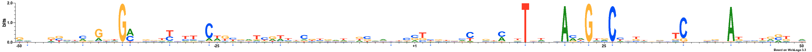
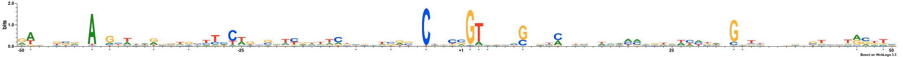
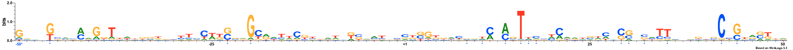
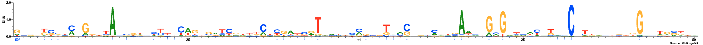
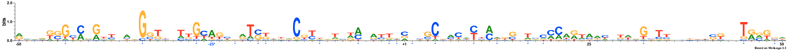
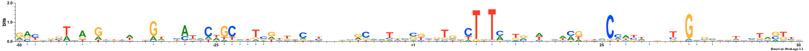
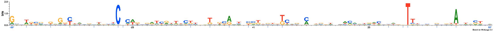
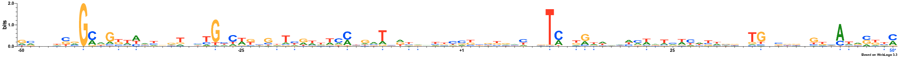
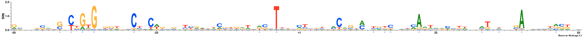
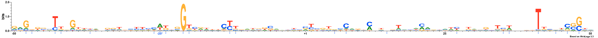

MODEL
Lambda: 3.0
Dataset structure: 800 sequences with 100 features
Number of architectures in the best model: 10
Likelihood of best model: -95367.8414399
Architecture 1: 207 sequences with 17 important features
Sequence logo for the important positions in architecture 1

Architecture 2: 94 sequences with 16 important features
Sequence logo for the important positions in architecture 2

Architecture 3: 52 sequences with 16 important features
Sequence logo for the important positions in architecture 3

Architecture 4: 53 sequences with 25 important features
Sequence logo for the important positions in architecture 4

Architecture 5: 25 sequences with 20 important features
Sequence logo for the important positions in architecture 5

Architecture 6: 40 sequences with 22 important features
Sequence logo for the important positions in architecture 6

Architecture 7: 120 sequences with 19 important features
Sequence logo for the important positions in architecture 7

Architecture 8: 76 sequences with 20 important features
Sequence logo for the important positions in architecture 8

Architecture 9: 48 sequences with 15 important features
Sequence logo for the important positions in architecture 9

Architecture 10: 85 sequences with 22 important features
Sequence logo for the important positions in architecture 10

NOTE: All important positions in the logos are followed by an asterisk symbol and are coloured blue